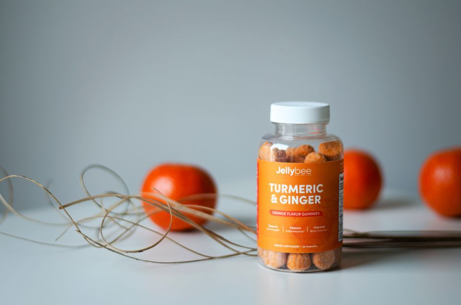

Nourishing the Body
What Foods Help With Inflammation? A Gentle, Whole-Food Guide
Foods that support a calmer inflammatory response are mostly simple, whole foods: colorful vegetables and fruit, leafy greens, olive oil, nuts, beans, whole grains, and fatty fish. Eating less ultra-processed food, fried food, and sugary drinks helps too. No single food is a fix, but a steady, colorful plate gives your body a kinder baseline.
What foods help with inflammation?
When people ask me this, they are often hoping for one magic ingredient. I understand that hope. But the body rarely responds to one food. It responds to a pattern, repeated day after day.

According to Harvard Health Publishing, the eating patterns researchers associate with lower inflammation are built around these foods:
- Colorful vegetables and fruit, especially berries, cherries, oranges and tomatoes.
- Leafy greens like spinach, kale and collards.
- Olive oil as an everyday fat.
- Nuts such as almonds and walnuts.
- Fatty fish like salmon, sardines and mackerel.
- Beans, lentils and whole grains, which bring fiber your gut can use.
If this list looks a lot like a Mediterranean-style table, that is no accident. It is one of the most studied ways of eating there is.
Which foods can make inflammation worse?
On the other side of the plate, the same research points to foods that tend to add to the load when they become everyday staples:
- Refined carbohydrates like white bread and pastries.
- Fried foods.
- Sugar-sweetened drinks.
- Processed and red meats eaten often.
- Margarine, shortening and lard.
I want to be gentle here. This is not a list of forbidden foods, and it is not a reason for shame. A birthday cake is not a failure. What matters is what your body meets most days, not what it meets once in a while.
How does stress connect to inflammation and food?
This is the piece I wish more people heard. You can eat a beautiful plate of food and still feel inflamed if your nervous system never gets to settle.
When your body stays in a stress state, digestion is not its priority. I call this the sympathetic lock: the body is braced for danger, so rest-and-digest takes a back seat. Food eaten in a rush, standing at the counter, in the middle of worry, is harder for a braced body to receive well.
Some people also notice certain foods bother them more in hard seasons. If that sounds familiar, my post on whether stress can cause food sensitivities explores why a stressed gut can feel more reactive. And if you want to recognize what inflammation can feel like in the first place, see signs of inflammation in the body.
Nourishment is not only what you eat. It is also how safe your body feels while you eat it.
How do I start eating to support a calmer body?
Start small. Big overhauls tend to collapse by the second week, and then we blame ourselves. Try one or two of these:
- Add before you subtract. Put one more color on your plate at each meal before you take anything away.
- Swap your fat. Cook with olive oil where you used to reach for butter or shortening.
- Make water easy. Keep a glass within reach and trade one sugary drink a day for water or herbal tea.
- Eat sitting down. Take three slow breaths before your first bite. Let your body know it is safe to receive.
- Plan one fish or bean meal. A simple lentil soup or a piece of baked salmon counts.
None of these replace the guidance of your physician, especially if you live with a diagnosed condition, take medications, or have food allergies. Ask them before making big changes.
When should you see a doctor about inflammation?
Please talk with your physician if you have ongoing pain, swelling, stiffness, fatigue that does not lift, digestive changes, or symptoms that are new or getting worse. Food is a supportive part of care, not a replacement for an evaluation.
If you want someone to look at the whole picture with you, you can read about my inflammation support. In my book, Nothing Missing, Nothing Broken, I write about the body as a faithful system that heals under safety, not pressure, and that is how I approach food too.
Pause for Reflection
Rest your hand over your stomach and take one slow breath in and a longer breath out.
How does your body usually feel when you eat? Rushed, distracted, guarded, or at ease? What is one meal this week you could slow down for, and simply receive?
"Whether therefore ye eat, or drink, or whatsoever ye do, do all to the glory of God" (1 Corinthians 10:31, KJV). Even an ordinary meal can be an act of care.
FAQ
What foods help with inflammation?
Research links whole-food eating patterns with lower inflammation. That means colorful vegetables and fruit, leafy greens, olive oil, nuts, beans, whole grains and fatty fish. A steady pattern matters more than any single food.
What foods should I avoid for inflammation?
Refined carbohydrates, fried foods, sugar-sweetened drinks, processed meats and solid fats like shortening are linked with more inflammation when they are everyday staples. Enjoying them occasionally is very different from eating them daily.
How long does it take for diet changes to help?
It varies from person to person. Many people find that steady changes, kept up over weeks rather than days, feel more sustainable. Your physician can help you track what is changing for you.
How do I start working with you?
If you would like to talk through whether this is a fit, you can send me a message through my contact page, and we can look at gentle next steps together.
This article is for educational purposes and is not medical advice. It is not intended to diagnose, treat, cure, or prevent any disease. Please work with a qualified practitioner, and consult your physician before making changes to your health routine.
In Renewal,
Lynette Wing
Founder of Renewal Health
Clinical Homeopath, Naturopath, Mind-Body Practitioner
Dedicated to root-cause healing and whole-person alignment. Guiding clients to emerge, align, and live fully, restoring vitality, clarity, and sustainable wellness. About Lynette